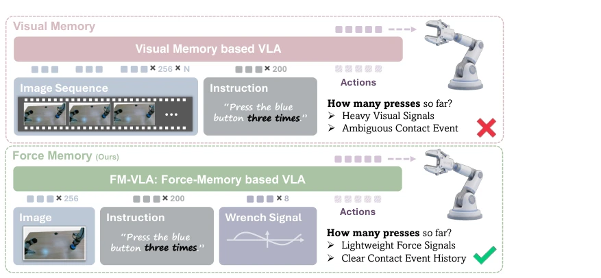
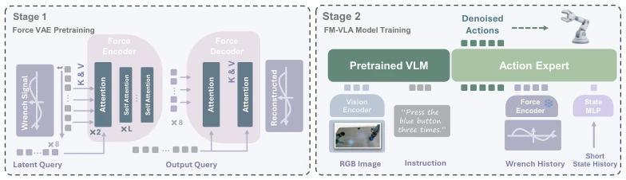
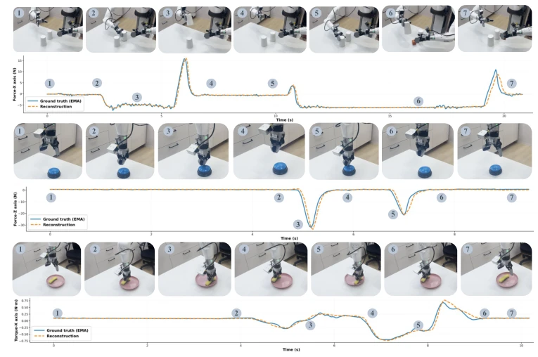

This paper adds a "haptic memory" to VLA models, which is quite interesting. Current VLA models either guess blindly (Markovian) or store a bunch of images (visual memory), but images are often unclear in contact tasks. The authors use VAE to compress force signals as memory, saving resources and being effective. However, the 8-token bottleneck is a bit rigid; if tasks are particularly long, it might not be enough. Overall, it is a pragmatic improvement, but do not expect it to solve all long-horizon planning problems. Although visual memory can store history, it has high computational overhead and is easily affected by occlusion; this paper directly bypasses vision and lets the six-axis force sensor data speak, which is indeed smart. But do not get too excited, the fixed 8-token bottleneck limits long-horizon memory capabilities and may not be enough for tasks requiring remembering hundreds of contacts. Overall, it is a pragmatic improvement, but do not expect it to solve all long-horizon planning problems.
Although Vision-language-action (VLA) models have strong generalization, most make decisions based on current observations, belonging to the Markovian assumption, and cannot handle tasks requiring historical memory. Existing visual memory methods like MEM [6] introduce historical frames, but have high computational overhead and fail when visual changes in contact events are minimal (e.g., pressing a button). Although ForceVLA [7] and TA-VLA [8] introduce force signals, they are only used for short-term correction of current actions and lack accumulation of long-horizon interaction history. FM-VLA aims to fill this gap, using force sensors to directly capture contact events and solve the memory missing problem in non-Markovian tasks.

Figure 1: Comparison between visual memory based VLA and FM-VLA, which incorporates force (wrench) based memory to enable temporal context understanding for non-Markovian, contact-rich manipulation tasks.
The overall architecture is divided into two-stage training. The first stage is task-agnostic Force-VAE pretraining, using a Perceiver-IO structure to reconstruct six-axis force/torque time series, compressing long-horizon force history into K latent tokens. The second stage fine-tunes the VLA policy (based on π0.5), freezing the VAE encoder, and concatenating its output force memory tokens with short-term joint state tokens to the tail of the Flow-matching Action Expert. Force signal inputs undergo EMA smoothing denoising before input, and random noise prefix padding is added during training to prevent the model from cheating using sequence length. This design allows the model to utilize accumulated contact event history to guide action generation while maintaining inference efficiency. Additionally, short-term state tokens are used to supplement motion context before contact, avoiding repetitive behaviors.

Figure 2: Overview. We augment a VLA with lightweight force-based temporal memory. Force/torque histories are encoded by a VAE encoder into latent representations, projected via MLP into force memory tokens that condition the flow matching action expert. A short-term state memory token is further appended to provide motion context.
Evaluated on the Agibot G1 bipedal robot on three contact-rich tasks: finding hidden blocks, pressing buttons, and wiping plates. Baselines include memoryless π0.5, short-term haptic TA-VLA [8], and visual memory π-MEM [6]. FM-VLA achieved an average success rate of 83.3%, significantly outperforming baselines. Especially in the button pressing task, visual memory was only 33.3%, while FM-VLA reached 72.2%, proving the advantage of haptic memory in visually ambiguous scenarios. Inference latency increased by only 3ms, with extremely high efficiency. Ablation studies show that the VAE encoder outperforms GRU and Q-Former, and the combination of haptic and state memory yields the best results.
其他图片Other Figures

Figure 4: Trajectory and force signal visualization. For each task, we visualize the FM-VLA inference trajectory and a selected channel of force readings, with each frame’s time marked. FM- VLA correctly memorizes contact events and complete manipulation successfully.